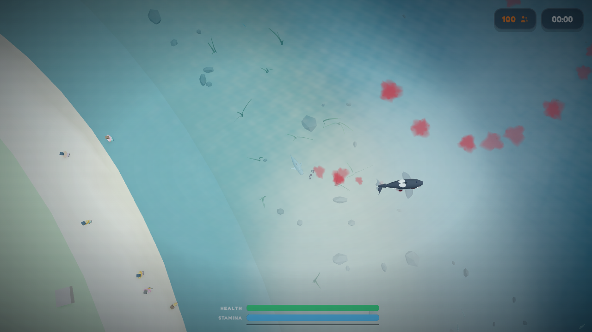
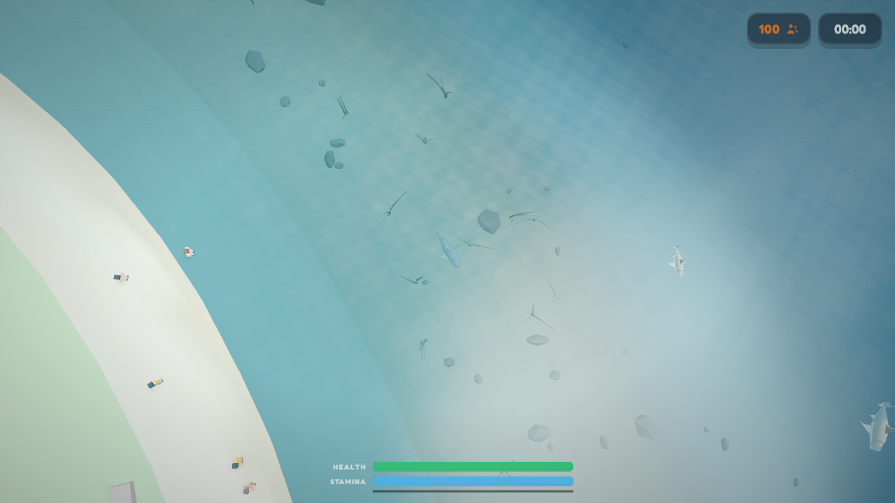
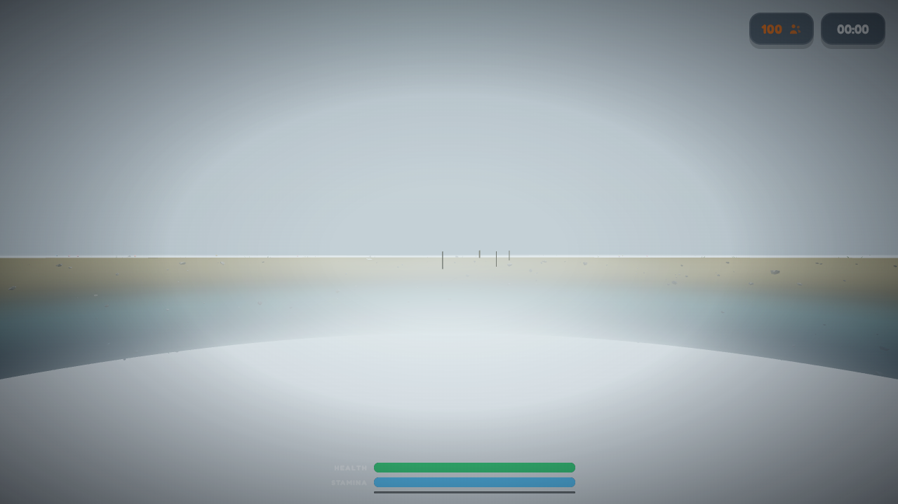
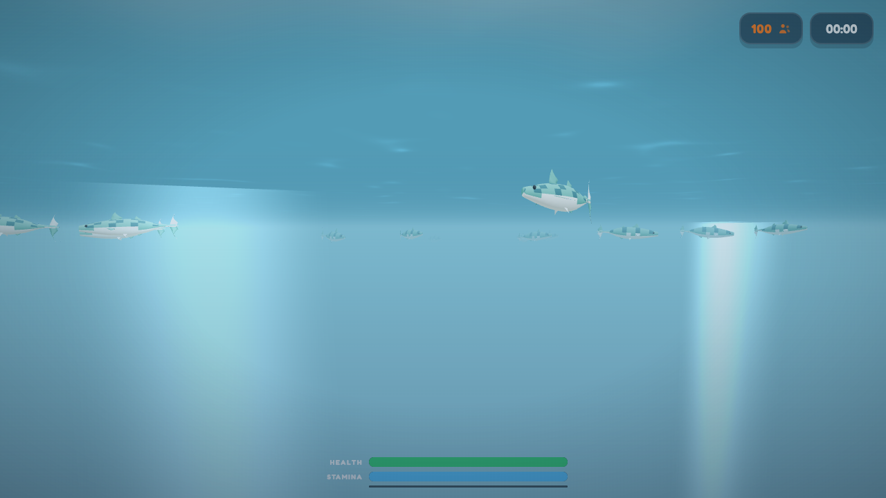
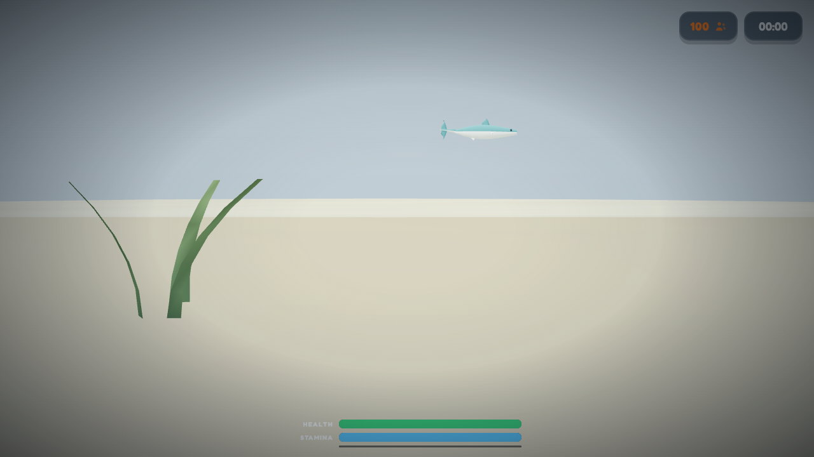
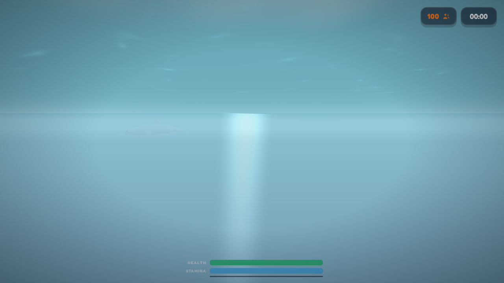
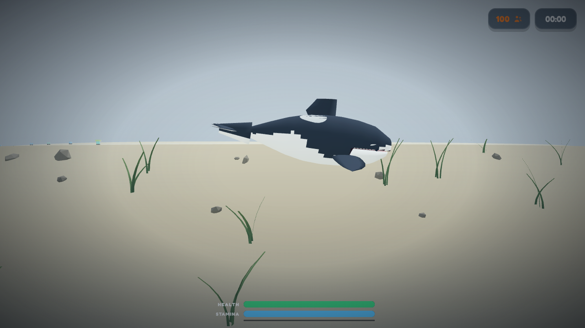
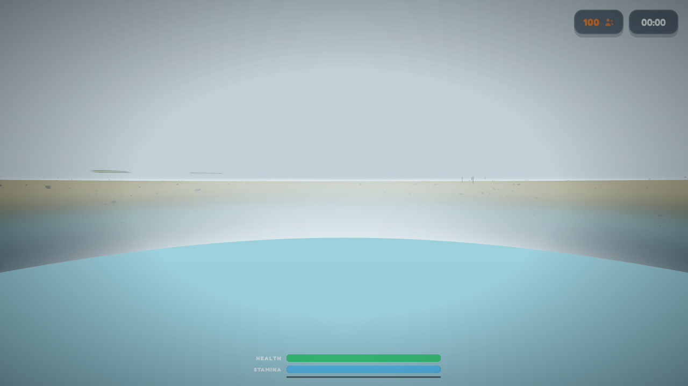

The owner's complaint, measured: 'weird population of numbers of each animal ... realistic ranges but random not all the same.' Both columns boot ?mode=sharksim on one pinned seed, run the live restocker to its own steady state, and read every group out of the engine's herd objects with one ruler. BEFORE: stockSea clipped each arriving school to its quota gap (scrap schools of 2-3), dolphin pods were hardcoded couples of 2-3, and the island seeder truncated the last group of every species to the leftover count while a rare pod animal spawned the same minimum pod every boot. AFTER: every group — sardine balls 20-45, mackerel shoals 12-30, dolphin pods 4-9 (frenzy's bait test now requires a small body, so a real pod can exist), orca pods 3-8 — is drawn whole from a researched range, remainders fold into the last group, and schools bigger than one tick's build budget arrive in instalments into ONE herd.
Frames: 1280x720
http://127.0.0.1:8791/?mode=sharksim&seed=90210&cfg_BOOT_METER=0&visualCompare=before-1787797586818http://127.0.0.1:8845/?mode=sharksim&seed=90210&cfg_BOOT_METER=0&visualCompare=after-1787797600446Generated August 26, 2026 at 10:26 PM. Every pair uses the actual registered model builder from its source URL. The runner holds subject, random seed, viewport, camera framing, backdrop, and lighting constant so the source change is the variable.
underNatural is the complaint counted with the research as the ruler: multi-animal groups smaller than the smallest group their species forms in the wild, game-scaled (fish 12, sardine 20, dolphin 4, orca 3, tuna 3) — every quota-clipped scrap and truncated pod lands here, and randomness alone never does. scrapSchools is the bait-fish subset. The dolphin pair of metrics should sit inside 4-9 after (2-3 before); orcaPodSize inside 3-8. groupTable in each capture's debug lists every group per species, largest first — the raw census both columns were scored from.
| Subject | Metric | Before | After | Δ |
|---|---|---|---|---|
| All 4 matched captures | Live aquatic bodies at steady state | 98 | 160 | +63% |
| All 4 matched captures | Real groups (2+) in the sea | 15 | 13 | -13% |
| All 4 matched captures | Groups below their species' natural minimum | 8 | 0 | -100% |
| All 4 matched captures | Scrap schools (bait fish groups under 8) | 6 | 0 | -100% |
| All 4 matched captures | Biggest fish school in the sea | 13 | 26 | +100% |
| All 4 matched captures | Largest dolphin pod | 4 | 6 | +50% |
| All 4 matched captures | Smallest dolphin pod | 2 | 4 | +100% |
| All 4 matched captures | Orcas in the water | 3 | 3 | 0% |
| All 4 matched captures | groupTable | — | — | — |
| The Biggest School In The Water | shotSchool | 13 | 26 | +100% |
| A Pod, Not A Couple | shotPod | 4 | 6 | +50% |
| The Orca Pod Rolls In | shotOrcas | 1 | 3 | +200% |
An aerial over the player's patch of sea after the restocker has settled. The numbers under this frame are the whole complaint: how many groups exist, how many of them are exact same-size twins of another group of their species, and how many are scraps smaller than any real school. BEFORE: quota-clipped scraps and twin groups. AFTER: every group drawn whole from a researched range.


The camera stands over the largest fish school the census found. Real sardine schools run from ~25 into the millions and are always the biggest thing in the water column; game-scaled that means the top school here should read as a BALL — dozens of bodies — not a loose dozen. BEFORE: schools capped near 16 and topped up in scraps. AFTER: sardine balls of 20-45 arriving whole (in instalments if they beat the one-frame build budget, but into ONE herd).


The largest dolphin group in the sea. Coastal bottlenose pods are 2-15 animals; this sim shipped with pods of two to three. BEFORE: 2-3 dolphins. AFTER: pods drawn from 4-9, sized differently every time they form.


Wherever the orcas are, the lens goes. Transient hunting pods run 2-7, residents 5-50; the ratio system plans ~3 orcas for this island, and the old seeder truncated the pod to exactly that plan — the same pod of 3, every boot. AFTER: the pod is drawn whole from 3-8, so its size is a fact about THIS boot, not a constant.

